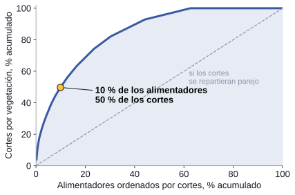
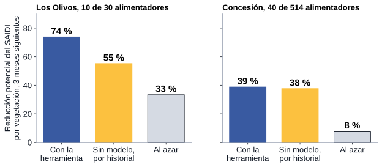

Poda priorizada por riesgo de vegetación
Pitch: herramienta para decidir dónde podar primero
Ricardo Amiel Acuña Villogas
César Eduardo Pajuelo Reyes
Angello Giovani Soldi Cataño
Josué Nehemías Velo Poma
Paolo Medrano Terán
César Eduardo Pajuelo Reyes
Angello Giovani Soldi Cataño
Josué Nehemías Velo Poma
Paolo Medrano Terán
Grupo 2 · DS5045 Ciencia de Datos Computacionales
Pluz Energía y UTEC · noviembre de 2026
10 s. Buenos días, somos el grupo 2. Primero un pitch de tres minutos y luego los hallazgos y la demo.Pluz Energía y UTEC · noviembre de 2026


Pitch 1/13
1 de cada 5 cortes en la red aérea viene de la vegetación
Datos de Pluz, enero de 2024 a agosto de 2026
1328cortes por vegetación o sin causa en red aérea
13,6 %del SAIDI de toda la concesión
1,2 millonesde clientes en alimentadores que ya sufrieron cortes por vegetación

El 10 % de los alimentadores concentra la mitad de los cortes
Pitch 2/13
Hoy se poda por calendario o después del corte
Cómo se decide hoy
- Calendario fijo
- Reacción al corte
- Revisión manual, conexión por conexión
Qué produce
- Podas tardías o innecesarias
- Cuadrillas sin prioridad
- SAIDI que se podía evitar
Podar antes de que la rama toque el cable
Pitch 3/13
Una lista que dice dónde podar primero
Datos de Pluz
➜Riesgo a 3 meses
➜Índice de 0 a 100
➜Plan en el mapa

Pitch 4/13
Qué cambia para Pluz
Hoy
Con la herramienta
Dónde mirar
Recorrer la red
Lista en un mapa
Criterio
Experiencia de cada uno
Cuatro criterios explícitos
Tamaño del plan
A ciegas
Ajustado a las cuadrillas
Actualización
Manual
Semanal y automática
Pitch 5/13
Más de la mitad del SAIDI por vegetación era evitable
Plan de mayo, contrastado con junio a agosto de 2026
57 %3,87 de 6,78 min, 8 distritos
1,7×más que podar al azar
74 %en Los Olivos, enero a mayo
